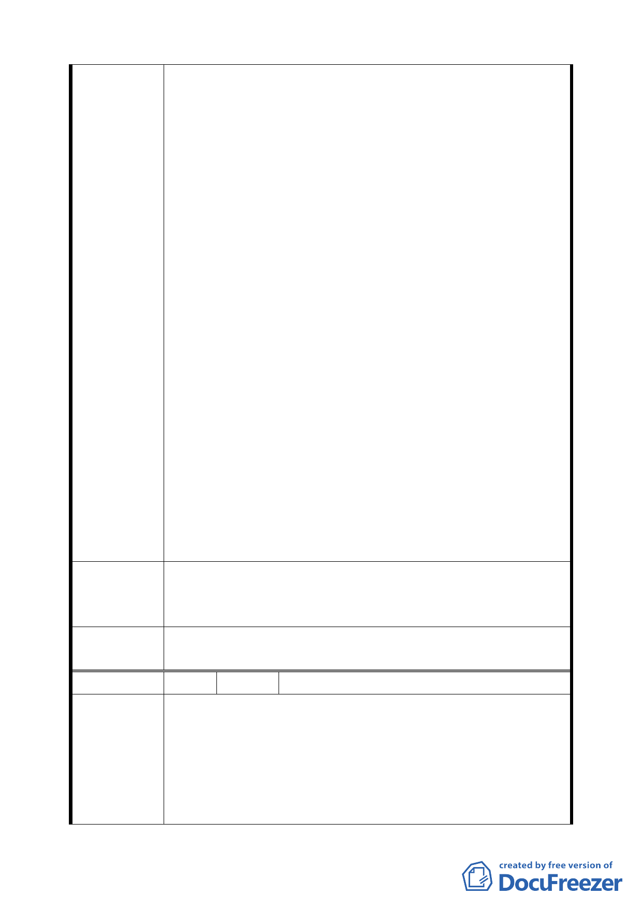

面基地線間之前院平均水平距離，後院深度為建築物後牆
或後柱中心線與後面基地線間之後院平均水平距離。同法
規定第二種住宅區之前院深度即為 5 公尺，後院深度即為 3
公尺，與本基地之規定實為一致，「臺北市土地使用分區管
制規則」並有規定最小淨深度不得小於 1.5 公尺。
5.本地區之都市設計管制要點內容中，對於計畫區內之指定
牆面線、公共開放空間系統、騎樓、迴廊、無遮簷人行道
等退縮規定，均已整體考慮留設，自當遵照辦理。唯於院
落規定之計算方式，考量建築設計量體得以彈性配置，並
留設深淺不同之前院深度，本基地之最小前院深度 5 公尺，
最小後院深度 3 公尺，函請准予依全市通用之土地使用分
區管制規則定義之平均水平距離方式計算。
6.從都市的觀點來看，院落屬私權範圍，非屬都市公共開放
空間，依都市計畫之管制技術來看，院落規定不同於屬全
面一致性退縮之指定牆面線、公共開放空間系統、騎樓、
迴廊、無遮簷人行道等規定，是以放諸全市來看，不論是
台北市土地使用分區管制規則，亦或細部計畫另有規定之
地區，均已經回歸全市通用之土地使用分區管制規則定義
之平均水平距離方式計算（如信義計畫地區）。就規定影
響設計結果之實際面上來看，本基地就兩個方案來比較，
全面退縮 5 公尺之方案，姑且不談其建築設計的不合理處，
單就其量體橫向拉長，無法製造凹凸虛實變化之空間，以
都市的角度來看，亦是較差的方案。
案內都市設計管制要點第八點院落規定之計算方式，請准予
建 議 辦 法 依全市適用之土地使用分區管制規則定義之平均水平距離方
式計算。
委 員會決 議 同意陳情民眾所提建議，回歸本市土地使用分區管制規則平
均深度與最小深度規定辦理。
編 號 17 陳情人 筑丰實業股份有限公司（R13 街廓）
1.筑丰實業股份有限公司負責人：王一婷委託王山頌建築師
事務所規劃設計位於南港區南港段一小段 384 等 10 筆地
陳情理由
號，實施都市更新事業(本案都市更新事業計畫於 97 年 01
月 09 日 經 台 北 市 政 府 核 准 公 展 在 案 ， 府 都 新 字 第
0963104740l 號函)。
2.本案位於 R13 街廓，依計畫書(府都四字第 09115514600 號)
32